Córtex Estudos · 4º Semestre · Anatomia Topográfica · Aula de 16/10
Espaço Retroperitoneal, Rins e Ureteres
O que fica atrás do peritônio: como o retroperitônio se forma no embrião, seus limites e suas expansões, a fáscia renal que o divide em três espaços (pararrenal anterior, perirrenal e pararrenal posterior) e o conteúdo de cada um. Depois, o rim por dentro desse cenário — posição, sintopia, revestimentos, hilo, artérias e veias segmentares, a veia renal esquerda (quebra-nozes, varicocele) —, a suprarrenal, o ureter com suas constrições e relações na pelve, e os linfáticos, veias lombares e nervos da parede posterior.
1 · O que é o retroperitônio (e por que o cirurgião o usa)
- "Retro" = atrás de; peritônio = a serosa que reveste a cavidade abdominal e pélvica. O retroperitônio é o que fica ATRÁS da cavidade peritoneal.
- 🎯 Diferença-chave: o peritônio é "restrito" (vísceras, vasos e nervos delas); o retroperitônio é "tudo" — músculo, nervo, artéria, veia, linfático, gordura.
- História contada na aula: nos séculos XVIII–XIX, a litíase renal matava muito (dieta com muito sal e carne conservada em cinza de madeira, rica em carbonato de cálcio, e pouca água). Tirar a pedra exigia abrir a parede anterior, o peritônio, afastar o intestino — mortalidade altíssima (sepse, hemorragia).
- Em 1893, Reynier (La Semaine Médicale) operou um paciente em decúbito lateral e encontrou um plano que separava o peritônio do rim: o acesso retroperitoneal (usado na nefroureterectomia). Com ele, a mortalidade desabou.
- 🎯 Por que funciona: com o paciente de lado, a gravidade empurra as vísceras peritoneais para a frente — o retroperitônio vira uma via de acesso natural, pela região lateral.
2 · Embriologia: rotação e formação da fáscia renal
- Período: 6ª a 10ª semana. O intestino cresce, sai da cavidade (herniação fisiológica) e roda — e o peritônio roda junto.
- Na linha sagital mediana estão pâncreas ventral e dorsal, duodeno e baço; com a rotação, o duodeno fica em "C" e os dois brotos pancreáticos se juntam.
- 🎯 Resultado: esses órgãos ficam com a face ANTERIOR revestida de peritônio e a face POSTERIOR sem peritônio, encostada no retroperitônio.
- Entre o peritônio que rodou e os somitos ficam células do MESODERMA, que secretam tecido conjuntivo (colágeno, fibras elásticas, proteoglicanos): é assim que se forma a FÁSCIA RENAL. No slide: a lâmina posterior é proeminente; a anterior, tênue — a anterior funde-se ao peritônio parietal posterior e a posterior liga-se às fáscias do psoas maior e do quadrado do lombo.
- ⚠️ Não confundir: a fáscia renal não é o revestimento colado ao rim — quem reveste o parênquima é a cápsula fibrosa (tópico 11).
🩺 Na prática (exemplo da aula)
Câncer de pâncreas na face ANTERIOR tende a dar sinal clínico mais cedo — ali há peritônio, vasos e inervação, e o tumor comprime estruturas. Na face POSTERIOR há um espaço retroperitoneal enorme: o tumor cresce calado. Não é que o tumor anterior seja menos agressivo — o sinal clínico é que chega antes.
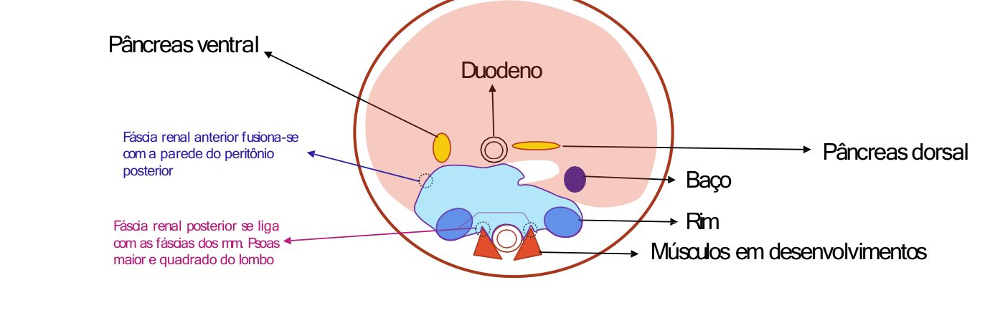
3 · Limites "macro" do retroperitônio
| Limite | Estrutura | O que a aula destacou |
|---|---|---|
| Superior | M. DIAFRAGMA | Na área hepática, os ligamentos triangulares, coronário e falciforme separam: o que está à frente deles é peritoneal; o que está atrás, retroperitoneal. |
| Inferior | VÍSCERAS PÉLVICAS ou "próximo à cavidade pélvica" (Testut, 1898) | Duas definições aceitas — o marco é ósseo (abertura da pelve) e varia com o biotipo (longilíneo × brevilíneo): por isso o limite inferior é "dissonante". |
| Posterior | FÁSCIA TRANSVERSAL | É lateralizada — não está na linha média (lá estão os corpos vertebrais); por isso o acesso é lateral. |
| Anterior | PERITÔNIO PARIETAL POSTERIOR | "A parte posterior do peritônio." |
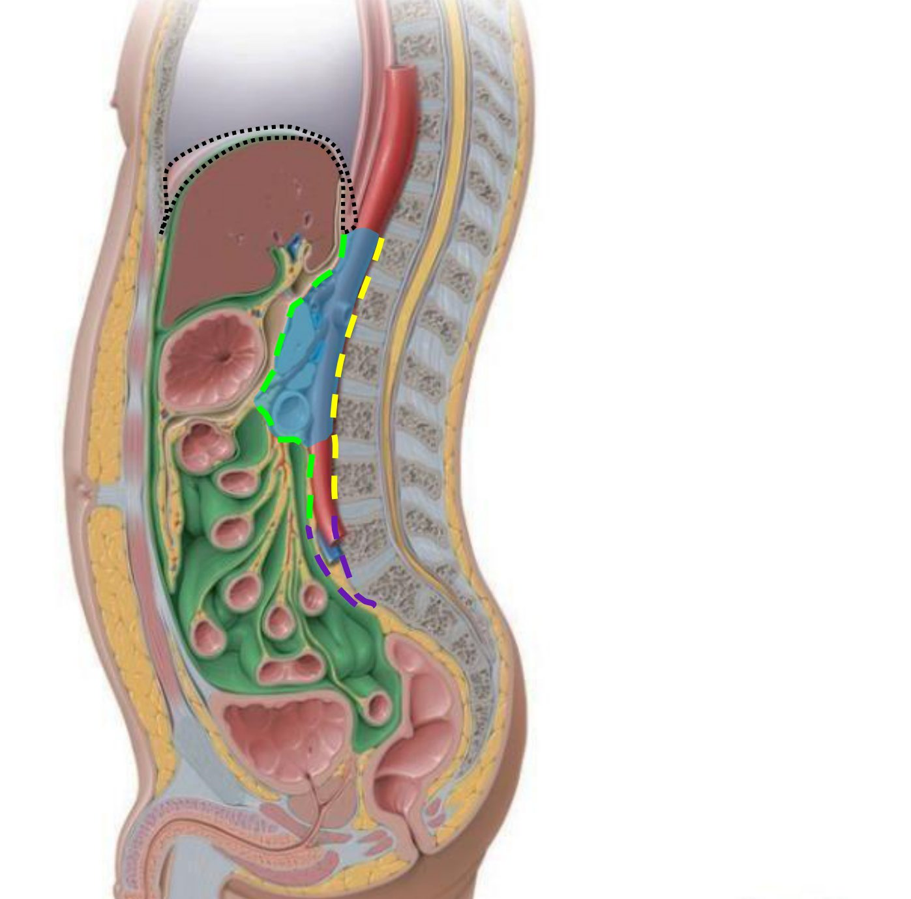
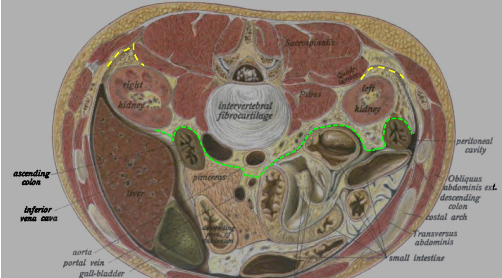
4 · Expansões esquerda e direita
- Com o crescimento das vísceras (o embrião de 6 semanas vira um bebê de ~50 cm), o retroperitônio forma EXPANSÕES — aumenta, não se rompe. São duas:
- 🎯 EXPANSÃO ESQUERDA = RECESSO LIENAL ("lienal" = do baço): situa-se no LIGAMENTO GASTROESPLÊNICO, entre o estômago e o hilo do baço; na maioria das vezes é subdesenvolvida (descrição de Waldomiro de Paula, 1941).
- Segundo a aula, há indivíduos (populações endogâmicas) sem esse ligamento: o peritônio fica comunicado com o retroperitônio. Ex.: facada no flanco esquerdo que perfura o intestino → fezes e sangue não ficam só na cavidade peritoneal, vão para o retroperitônio.
- 🎯 EXPANSÃO DIREITA = VESTÍBULO DA RETROCAVIDADE (bolsa omental): um corredor transversal que se comunica com a cavidade peritoneal pelo FORAME OMENTAL (de Winslow); é vertical, vai da 1ª porção do duodeno ao lobo caudado do fígado e é estreito no sentido anteroposterior (Testut).
- Na cirurgia: tirando o omento menor (em cuja borda está o ligamento hepatoduodenal), entra-se na bolsa omental e, atrás dela, no retroperitônio — "se está atrás da bolsa, é retroperitônio".
🩺 Na prática — "a mão no retroperitônio"
No trauma abdominal, o cirurgião passa a mão no retroperitônio: se a luva desliza sobre gordura, a fáscia renal está preservada; se encontra conteúdo/irregularidade, houve contaminação do retroperitônio → drenagem e paciente sem ficar deitado (cabeceira elevada), para o conteúdo não se espalhar para trás.
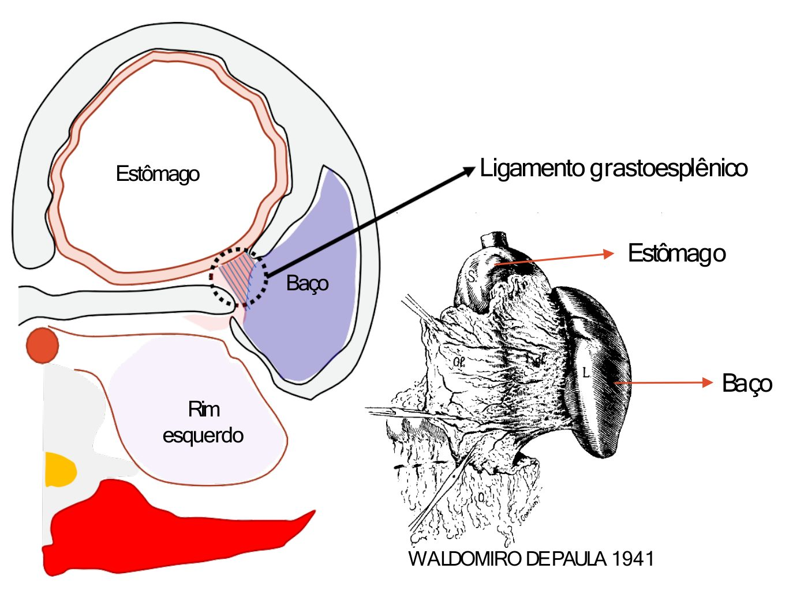
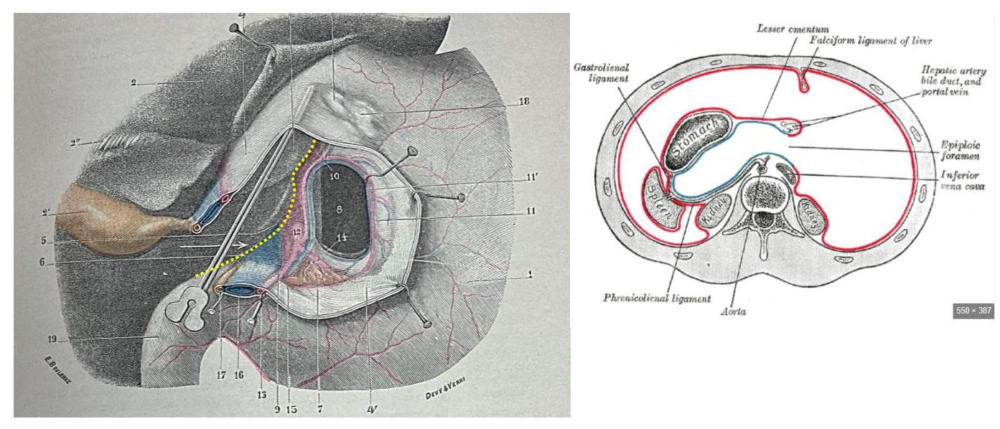
⚠️ Divergência
Na literatura, o ligamento gastroesplênico é uma prega peritoneal (derivada do mesogástrio dorsal) presente normalmente; sua ausência ou frouxidão é rara e associada ao baço errante, sem relação estabelecida com endogamia. Na prova, vale a descrição da aula (expansão esquerda/recesso lienal).
5 · Fáscia renal: lâminas e epônimos
- A FÁSCIA RENAL (fáscia de Gerota) é tecido conjuntivo (colágeno + fibras elásticas) que contorna o rim e divide o retroperitônio em TRÊS espaços (Dodds et al., 1986).
- Tem duas lâminas que se unem medialmente e continuam na face anterior da coluna, aderindo fortemente à AORTA e à VEIA CAVA INFERIOR.
- 🎯 Nomes anatômicos × epônimos (os cirurgiões usam os epônimos):
| Nome anatômico | Epônimo (na aula) |
|---|---|
| LÂMINA ANTERIOR da fáscia renal | fáscia de TOLDT |
| LÂMINA POSTERIOR da fáscia renal | fáscia de ZUCKERKANDL |
- Regra de prova da aula: escreva os nomes anatômicos; se usar epônimo, use para todas as estruturas.
- 🎯 Consequência da aderência à aorta e à cava: a origem dos ramos da aorta e das tributárias da cava é retroperitoneal — mesmo quando o destino é peritoneal (ex.: um ramo que chega ao jejuno atravessa os espaços do retroperitônio).
⚠️ Divergência
Gerota: na aula, o nome correto seria de um alemão ("Gerts") e "Gerota" seria aportuguesamento. Na literatura, a fáscia é descrita por Dimitrie Gerota, anatomista romeno, em 1895 — é a referência citada no próprio slide. Toldt: na literatura, a lâmina posterior é a fáscia de Zuckerkandl (como na aula), mas o nome "fáscia de Toldt" costuma designar a fáscia de fusão retrocólica (atrás dos mesocolos ascendente e descendente); a lâmina anterior da fáscia renal é chamada por muitos de fáscia de Gerota.
6 · Espaço pararrenal anterior
| Limite | Estrutura |
|---|---|
| Superior | diafragma |
| Inferior | vísceras pélvicas (próximo à cavidade pélvica) |
| 🎯 Anterior | PERITÔNIO PARIETAL POSTERIOR — "esse vocês erram mesmo": o espaço é ANTERIOR, mas o limite se chama parietal POSTERIOR |
| Posterior | LÂMINA ANTERIOR da fáscia renal (Toldt) |
- Conteúdo — os órgãos parcialmente recobertos por peritônio: parte posterior do PÂNCREAS (cabeça e corpo), parte posterior do DUODENO, FLEXURAS CÓLICAS direita e esquerda e a parte posterior dos colos ascendente e descendente.
- Também os ramos anteriores da aorta no caminho para as vísceras — ex.: o tronco celíaco, que precisa atravessar este espaço para chegar ao estômago.
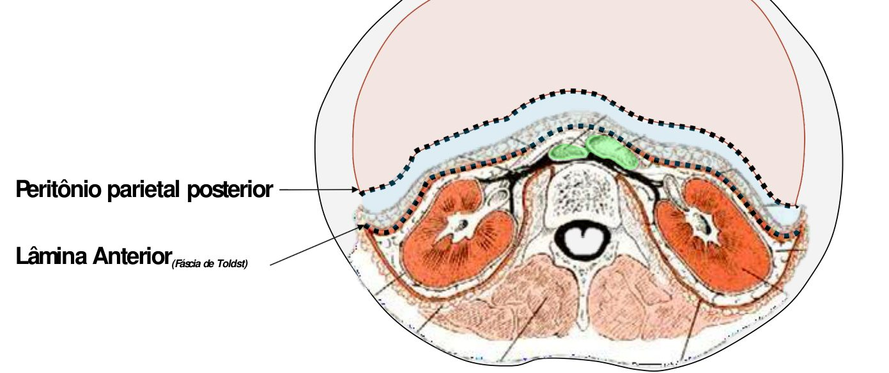
7 · Espaço perirrenal
- Limites: superior diafragma, inferior vísceras pélvicas, anterior LÂMINA ANTERIOR e posterior LÂMINA POSTERIOR da fáscia renal — é o espaço ENTRE AS LÂMINAS (não há limite lateral próprio: as lâminas se juntam).
- 🎯 Conteúdo (na aula): RIM, SUPRARRENAL, artéria e veia renais, PELVE RENAL, URETER, vasos GONADAIS, a CÁPSULA ADIPOSA do rim, a AORTA e a CAVA com seus ramos posteriores, os linfonodos pré, retro e lateroaórticos e pré/retrocavais e o plexo celíaco e demais plexos autonômicos colados à aorta.
- Regra da aula para a inervação: "se estiver colado na aorta ou na cava, é perirrenal".
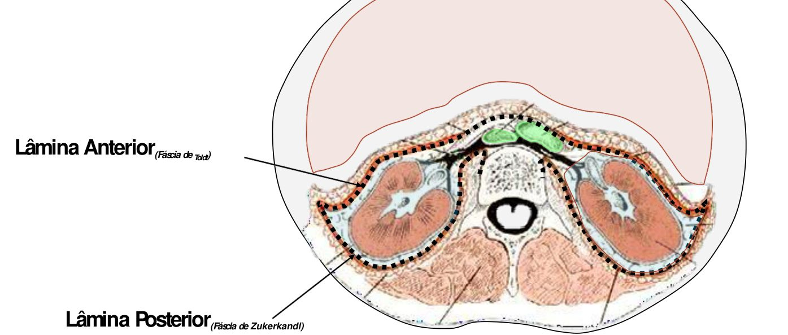
⚠️ Divergência
Na aula, aorta e cava (e seus linfonodos e plexos) ficam no espaço perirrenal. Na literatura radiológica (Meyers, Dodds), os espaços perirrenais são bilaterais e a aorta e a cava ocupam um compartimento vascular mediano próprio, à frente da coluna; a comunicação entre os dois perirrenais pela linha média é discutida. Na prova, vale a aula.
8 · Espaço pararrenal posterior e fáscia lateroconal
- "O mais difícil de todos." Limites: superior diafragma, inferior vísceras pélvicas (os que mais esquecem de escrever), anterior LÂMINA POSTERIOR da fáscia renal (Zuckerkandl), posterior e lateral: FÁSCIA LATEROCONAL.
- 🎯 FÁSCIA LATEROCONAL (Congdon e Edson, 1941): "um cone do lado" — começa atrás e termina lateralmente, fixando o lado do rim à parede abdominal; é larga, visível no cadáver.
- Conteúdo (na aula): a musculatura — PSOAS MAIOR, QUADRADO DO LOMBO e parte do TRANSVERSO DO ABDOME —, a origem e os ramos do PLEXO LOMBAR (subcostal, ílio-hipogástrico, ilioinguinal, cutâneo femoral lateral, genitofemoral, femoral), os TRONCOS LINFÁTICOS LOMBARES, as VEIAS LOMBARES e o corpo adiposo pararrenal.
- Gordura no retroperitônio = proteção mecânica e térmica.
⚠️ Divergência slide × fala
Na fala: a lateroconal é a fusão da fáscia renal com a fáscia TRANSVERSAL (escrever "fáscia transversal" não está errado, mas o professor quer o conceito de lateroconal). No slide: é a fusão das lâminas anterior e posterior da fáscia renal lateralmente, atrás dos colos ascendente e descendente, que continua anterolateralmente, por dentro da fáscia transversal. Saiba os dois. Na literatura, o pararrenal posterior contém basicamente gordura; os músculos e o plexo lombar ficam atrás da fáscia transversal (parede posterior), embora clinicamente sejam abordados por esse espaço.
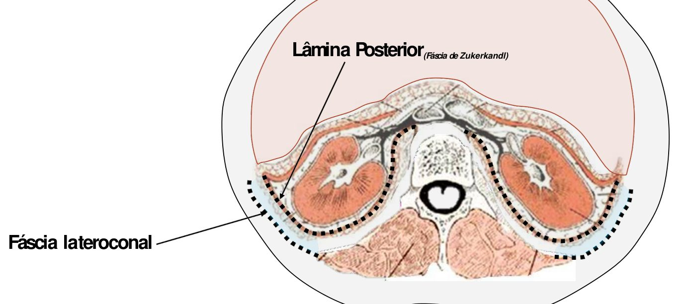
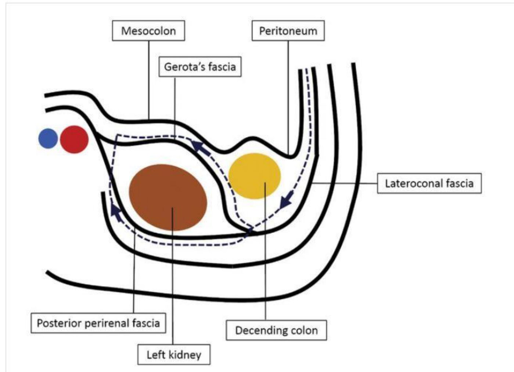
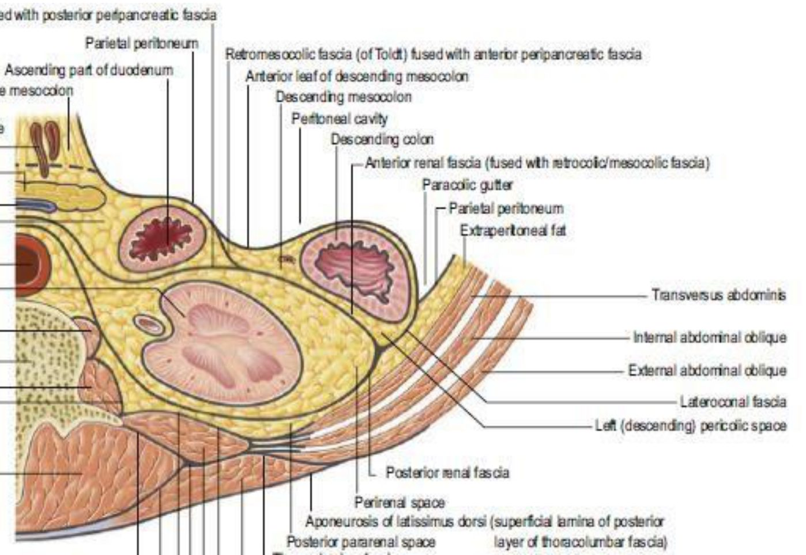
9 · Estruturas que atravessam os espaços
- As estruturas "caminham": uma mesma artéria pode passar por três regiões. Ex. clássico da aula — ARTÉRIA MESENTÉRICA SUPERIOR (AMS): origem na aorta (perirrenal) → atravessa a lâmina anterior e o pararrenal anterior (atrás do pâncreas) → atravessa o peritônio parietal posterior → no mesentério dá os ramos jejunais, ileais, ileocólica, cólica direita e cólica média (todos no peritônio).
- Pergunta de prova anunciada: "Qual estrutura atravessa o retroperitônio e chega ao jejuno? Escreva o caminho vascular e os espaços."
- Aneurisma da AMS: não dá quadro clínico próprio — aparece como necrose intestinal. Se o cirurgião só ressecar a alça sem pensar na causa vascular, o mesmo segmento volta a necrosar.
- 🎯 SÍNDROME DO QUEBRA-NOZES: a AMS comprime a VEIA RENAL ESQUERDA (que passa entre ela e a aorta) — é doença do RETROPERITÔNIO.
10 · Rim: posição e sintopia
- Vísceras retroperitoneais (espaço perirrenal), anteriores ao psoas maior, lateralmente à coluna, entre T11–T12 e L1–L3. O rim direito é mais baixo que o esquerdo (o fígado está em cima).
- O rim "repousa" na musculatura e fica pendular; a sustentação superior é das costelas. 🎯 Relações POSTERIORES: rim direito — 12ª costela; rim esquerdo — 11ª e 12ª costelas; ambos sobre psoas maior, quadrado do lombo e transverso do abdome.
- Quando a sustentação falha (ex.: perda de gordura/musculatura), o rim pode descer: ptose renal.
- 🎯 Relações ANTERIORES (sintopia):
| Rim DIREITO | Rim ESQUERDO |
|---|---|
| FÍGADO · FLEXURA CÓLICA DIREITA · DUODENO (junto ao hilo, medialmente) · parte do intestino delgado | ESTÔMAGO · PÂNCREAS · BAÇO · FLEXURA CÓLICA ESQUERDA · parte do jejuno |
🩺 Na prática (caso da aula)
Paciente com fístula duodenal derramando conteúdo junto ao hilo do rim direito (o duodeno é vizinho medial): sepse retroperitoneal tratada por meses sem achar a causa, até a imagem mostrar a fístula. Lição: lesão de órgão vizinho pode dar lesão renal secundária — e cada rim tem vizinhos diferentes.
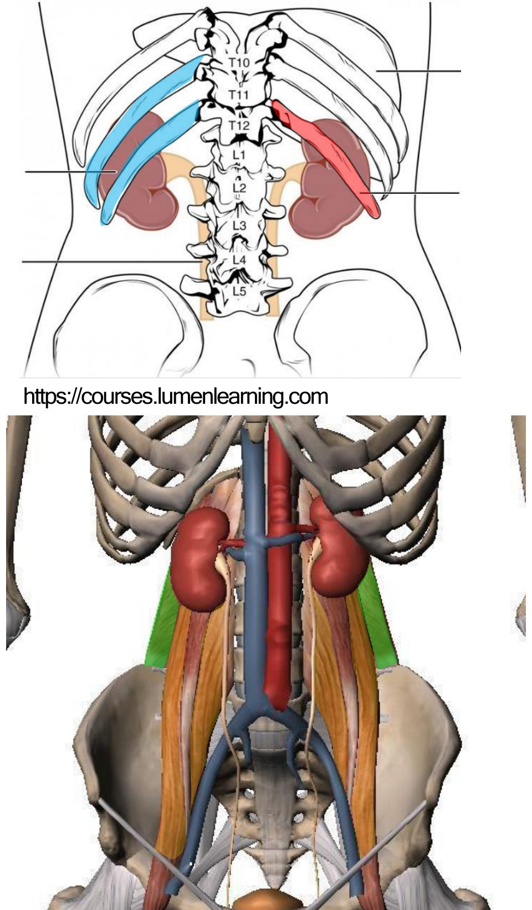
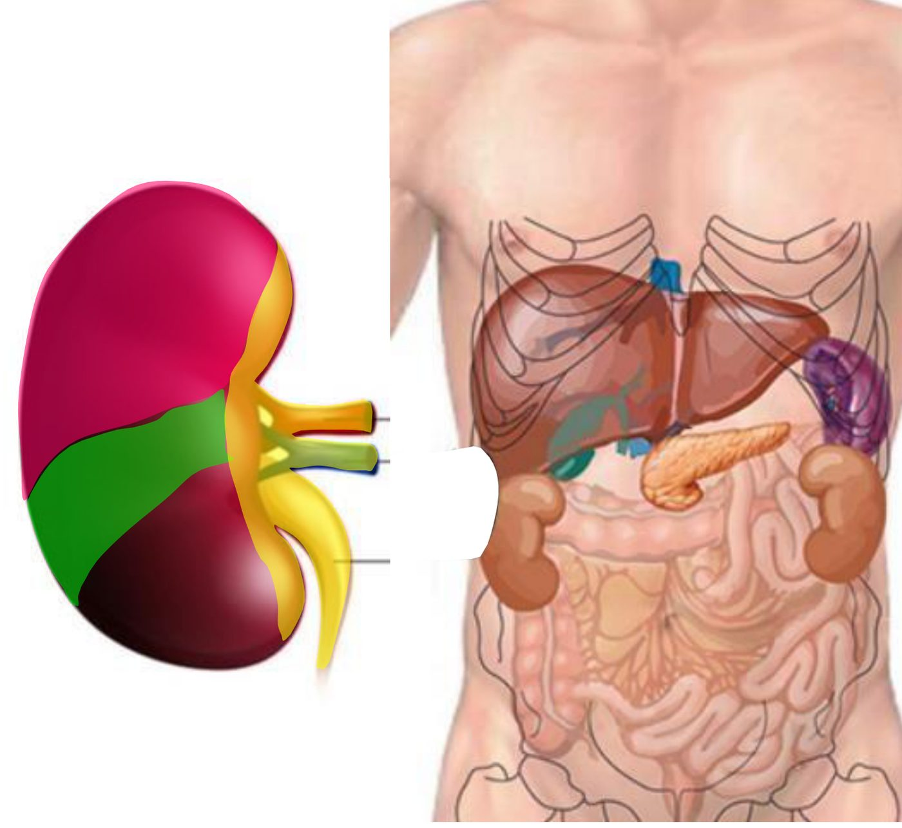
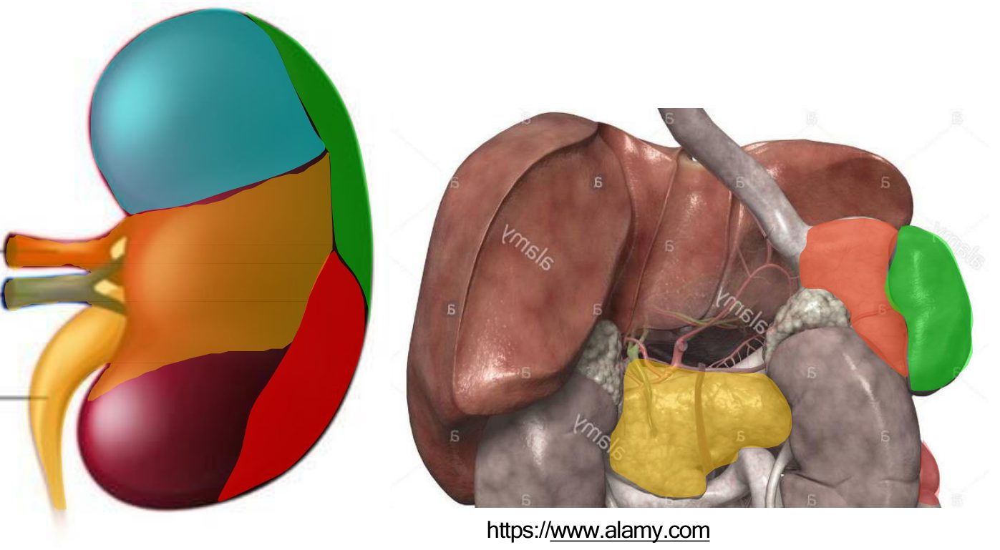
11 · Revestimentos do rim e hilo renal
Revestimentos do rim — de dentro para fora
- 1CÁPSULA FIBROSA — tecido conjuntivo bem aderido ao parênquima, com fibras elásticas (e colágenas): o rim, cheio de glomérulos ligados a artérias, "pulsa" e precisa distender.
- 2CÁPSULA ADIPOSA — gordura que circunda a fibrosa e penetra pelo HILO até o SEIO RENAL. Fica no espaço perirrenal.
- 3FÁSCIA RENAL — lâminas anterior e posterior (tópico 5), envolvendo a cápsula adiposa.
- 4CORPO ADIPOSO PARARRENAL — gordura por fora da fáscia renal; função protetora sugerida, não comprovada.
- 🎯 Na aula: com os anos a cápsula fibrosa ganha matriz, perde elasticidade e enrijece → mais resistência → hipertensão no idoso que "não fuma, não bebe, faz exercício"; tratada de forma menos agressiva com diurético.
- 🎯 Na aula: a gordura da cápsula adiposa no hilo é MARROM (termogênica, alto metabolismo): ao metabolizar arginina gera óxido nítrico — um dos controles vasodilatadores do rim.
- HILO RENAL = abertura na margem medial. Por ele passa o PEDÍCULO RENAL = vasos, nervos e pelve renal. O espaço entre essas estruturas, dentro do hilo, é o SEIO RENAL — preenchido pela cápsula adiposa.
⚠️ Divergência
Cápsula fibrosa e hipertensão: na literatura, o enrijecimento da cápsula com a idade não é causa estabelecida de hipertensão; o que se descreve é o rim de Page (compressão extrínseca do parênquima por hematoma/fibrose subcapsular → isquemia → renina). Gordura marrom: a gordura perirrenal humana contém adipócitos do tipo marrom (bege), mas a do seio renal é predominantemente branca; o óxido nítrico renal vem principalmente do endotélio (NO-sintase, a partir da L-arginina), não do tecido adiposo. Na prova, vale a aula.
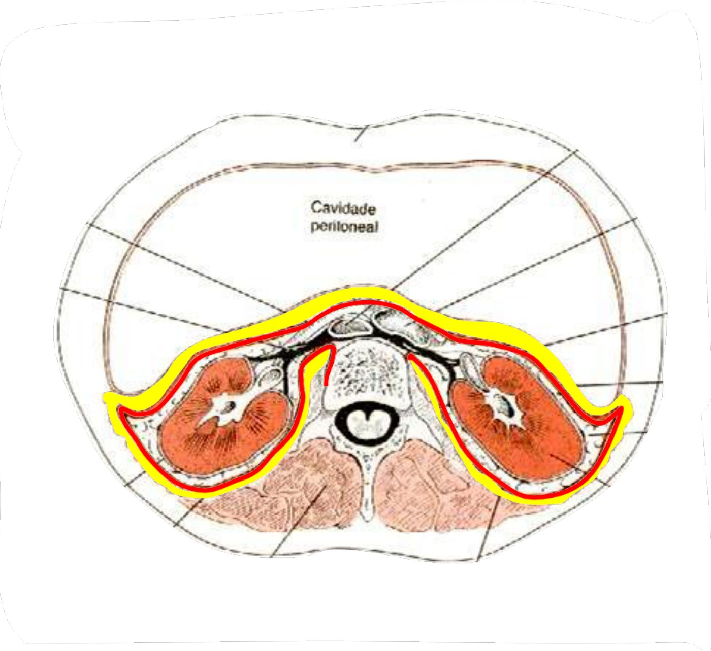
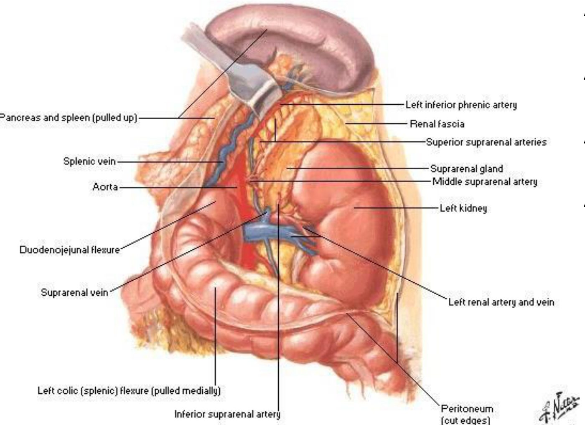
12 · Artérias renais, segmentos e zona avascular
- Artérias e veias renais são grandes vasos; o rim é extremamente vascularizado (filtra ≈ 180 L/dia). A artéria renal chega ao hilo na altura de L1–L2.
- 🎯 ARTÉRIA RENAL DIREITA passa POSTERIOR à VEIA CAVA INFERIOR. A ARTÉRIA RENAL ESQUERDA é superior e posterior à VEIA RENAL ESQUERDA.
- 🎯 No hilo, a artéria renal bifurca em ARTÉRIA RENAL ANTERIOR e ARTÉRIA RENAL POSTERIOR.
- A anterior dá 4 artérias segmentares: do segmento SUPERIOR, ÂNTERO-SUPERIOR, ÂNTERO-INFERIOR e INFERIOR. A posterior dá a artéria do segmento POSTERIOR. → 5 segmentos (territórios anatomocirúrgicos arteriais).
- 🎯 Para que serve: NEFRECTOMIA PARCIAL (tumor, lesões císticas) — se o tumor está no polo superior, clampeia-se só a artéria do segmento superior, não a renal inteira. O planejamento usa angiografia/angiotomografia (na aula: não precisa de impressão 3D cara).
- 🎯 ZONA AVASCULAR: região menos vascularizada entre os territórios anterior e posterior. "Não é que não tenha vaso — tem muito capilar": é por onde se abre o parênquima (ex.: retirar pedras quando a pelve está "empedrada"). Como achar: clampeia-se um ramo e observa-se a área que muda de cor.
- Ramos menores (não cobrados na prova, são de descritiva): segmentares → interlobares (nas colunas renais) → arqueadas (na base das pirâmides) → corticais radiadas (a 90°) → glomérulos.
- A artéria polar (que entra direto num polo) foi citada como variação anatômica.
- Definição que "cai e todo mundo erra": ARTÉRIA = vaso que sai do coração e leva sangue ao tecido; VEIA = vaso que sai do tecido e leva sangue ao coração — não é "sangue arterial × venoso" (pense na artéria pulmonar).
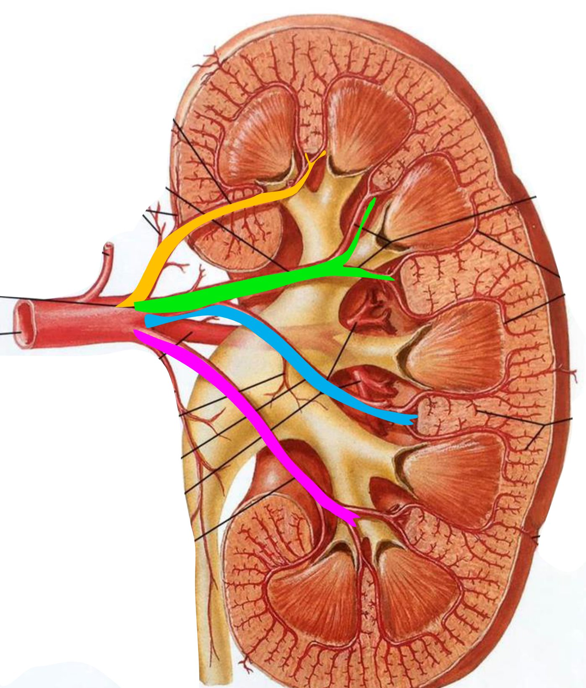
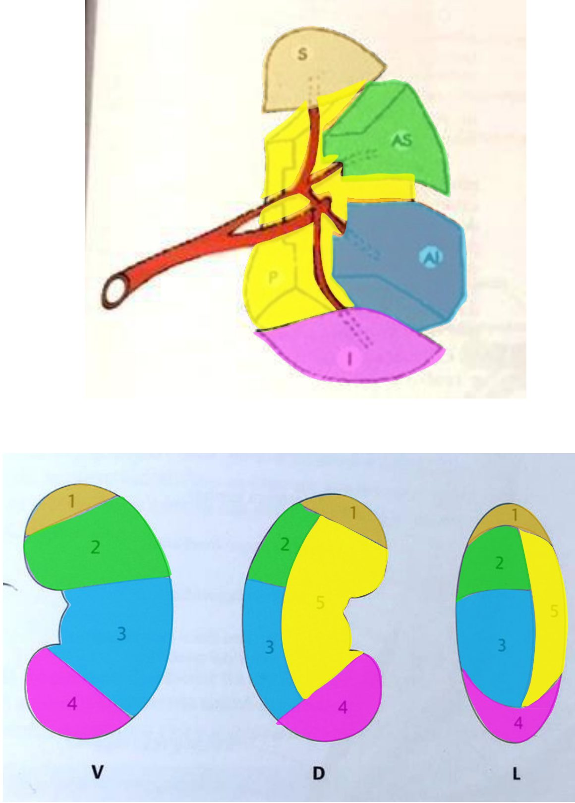
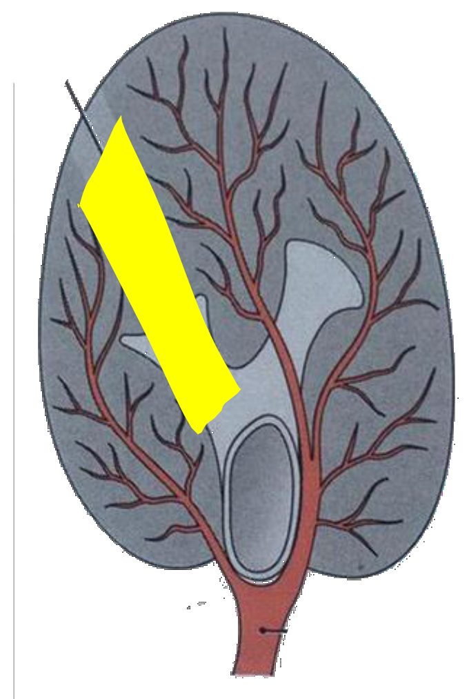
13 · Veias renais, varicocele e cava inferior esquerda
- Drenagem: pós-capilares → vênulas retas → arqueadas → interlobares → 3 veias segmentares: do segmento SUPERIOR, MÉDIO e INFERIOR → 3 territórios venosos (Didio e Tose, 1985) — diferentes dos 5 arteriais.
- Na cirurgia, a preocupação costuma ser a artéria — mas veia aberta sem ligadura sangra (hemorragia lenta): liga-se artéria E veia.
- VEIA RENAL DIREITA: curta, drena direto na veia cava inferior.
- 🎯 VEIA RENAL ESQUERDA: recebe a veia SUPRARRENAL esquerda e a veia GONADAL esquerda (testicular/ovárica), comunica-se com a hemiázigo e passa entre a AMS e a aorta até a cava inferior.
- 🎯 Quando a AMS comprime a veia renal esquerda (quebra-nozes), a gonadal esquerda — que sobe contra a gravidade e desemboca na renal — tem a drenagem dificultada → VARICOCELE (mais comum no homem jovem), com risco de perda funcional do testículo/ovário esquerdo e de fertilidade.
- PERSISTÊNCIA DA VEIA CAVA INFERIOR ESQUERDA: falha de regressão embriológica; slide: 0,2%–3% (na aula, "3% — muita gente": em 12 milhões, centenas de milhares). Sem sintomas, mas aumenta o risco de lesão vascular em cirurgias da região (a cava esquerda costuma desembocar na veia renal esquerda).
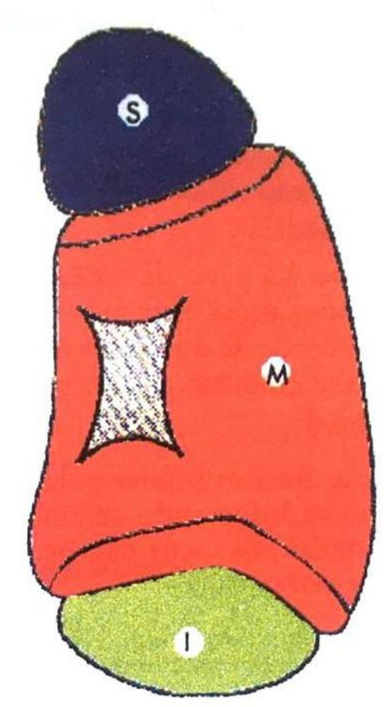
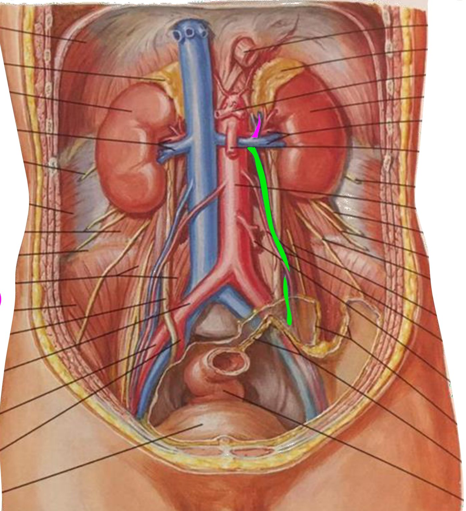
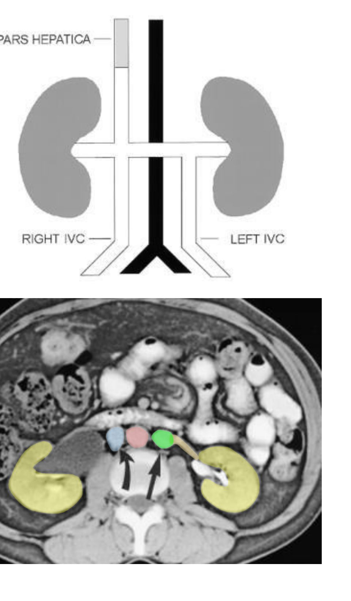
⚠️ Divergência
Na literatura, a cava inferior esquerda persistente (duplicação ou cava só à esquerda) ocorre em cerca de 0,2%–0,5% da população; 3% é o teto citado em séries de imagem selecionadas. O slide traz a faixa 0,2%–3%.
14 · Glândula suprarrenal
- Situada acima do rim (sintopia), mas é uma glândula à parte: CÓRTEX → corticosteroides (incluindo cortisol e aldosterona) e MEDULA → catecolaminas (adrenalina e noradrenalina). Estresse crônico → hipertrofia (reversível) e hiperplasia (não regride).
- 🎯 Três artérias:
| Artéria suprarrenal | Origem |
|---|---|
| SUPERIOR | artéria FRÊNICA INFERIOR |
| MÉDIA | AORTA |
| INFERIOR | artéria RENAL |
- ⚠️ O slide traz "superiores" duas vezes — a terceira linha é a INFERIOR, ramo da renal.
- Raciocínio da aula: a frênica inferior sai da aorta (perirrenal) e termina no diafragma — o limite superior do retroperitônio.
- Glândula com várias fontes arteriais = órgão essencial (como tireoide e pâncreas): se um ramo é lesado, os outros suprem o território.
- 🎯 Veias: suprarrenal DIREITA → veia cava inferior (direto); suprarrenal ESQUERDA → (frênica inferior) → veia renal ESQUERDA → cava inferior.
15 · Ureter: trajeto, partes e constrições
- Tubo fibromuscular (25–30 cm) de musculatura lisa "não constante" — há trechos com e sem músculo, e essa organização irregular faz a torção/peristaltismo que leva a urina.
- Cálices menores → cálices maiores → pelve renal → ureter.
- 🎯 Trajeto: começa após o estreitamento da pelve → desce sobre o PSOAS MAIOR → é cruzado pelos vasos GONADAIS → cruza os vasos ILÍACOS → entra na pelve. Até os vasos ilíacos é retroperitoneal; depois, estrutura da cavidade pélvica.
- 🎯 Três partes: ABDOMINAL (sobre o psoas maior) · PÉLVICA (dos vasos ilíacos à bexiga) · INTRAMURAL (dentro da parede da bexiga).
- 🎯 Três constrições anatômicas: JUNÇÃO PIELOURETERAL (JUP) · cruzamento dos vasos ILÍACOS (comum/externa — "margem pélvica") · JUNÇÃO URETEROVESICAL (intramural). São onde o cálculo para.
- Nos livros de clínica aparece uma 4ª constrição: o cruzamento por baixo dos vasos gonadais (testiculares/ováricos) — "anatomicamente são três; clinicamente, quatro".
- Clínica: cólica renal/litíase → sinal de Giordano (punho-percussão lombar dolorosa). O cálculo é radiodenso (aparece na imagem); litíase recorrente pede investigação (dieta, hidratação, causa genética).
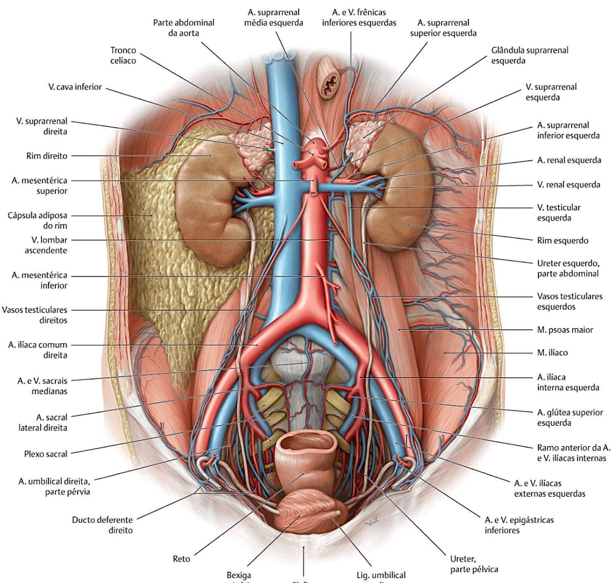
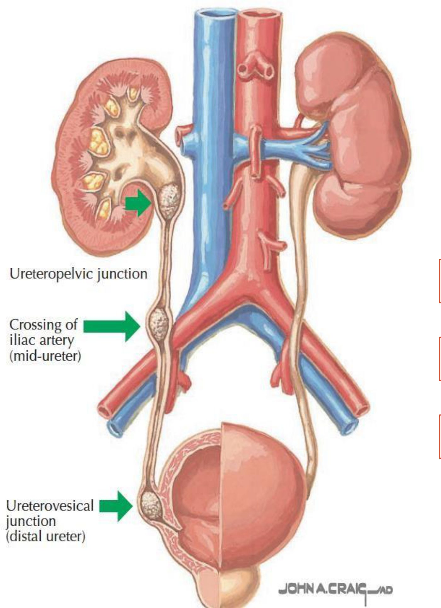
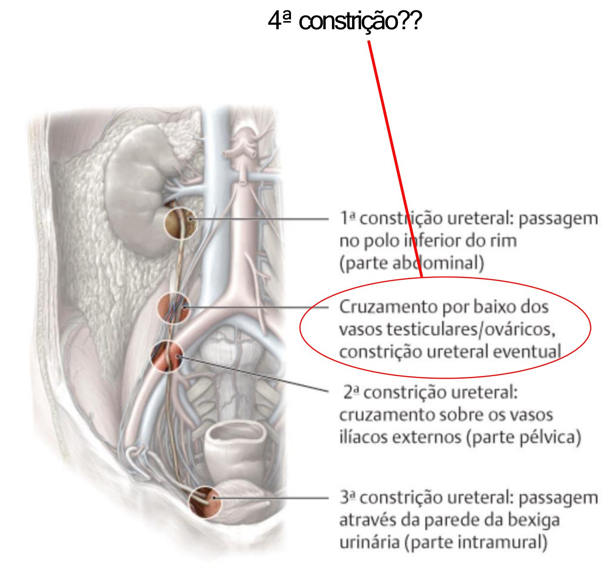
16 · Ureter na pelve: homem, mulher e histerectomia
- No homem: o ureter é cruzado superomedialmente pelo DUCTO DEFERENTE e fica anterior à extremidade superior da glândula seminal — raramente é problema cirúrgico.
- 🎯 Na mulher: ureter adjacente à margem livre do ovário, passa SOB o LIGAMENTO LARGO do útero e é CRUZADO SUPERIOR e ANTERIORMENTE pela ARTÉRIA UTERINA ("a água passa sob a ponte").
- 🎯 HISTERECTOMIA: quem só se preocupa com a artéria uterina pode ligar/lesar o ureter junto. Na aula: sob anestesia o ureter fica ocluído; ao acordar, a urina extravasa na pelve → sepse.
- Vias de histerectomia citadas: aberta (mais contaminação), laparoscópica (umbilical) e vaginal — a mais segura, pelo fórnice posterior até a escavação retouterina.
- Pegadinha da aula: a artéria uterina NÃO é do retroperitônio — é da cavidade pélvica.
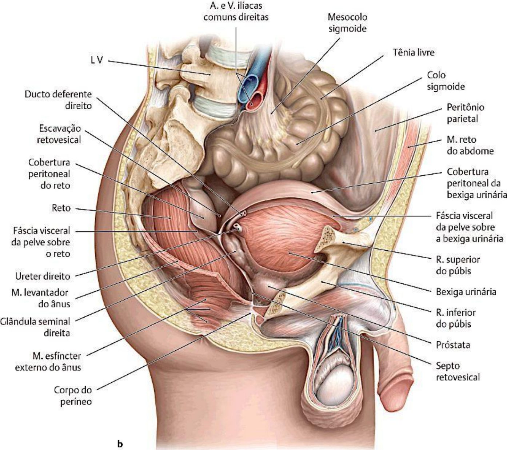
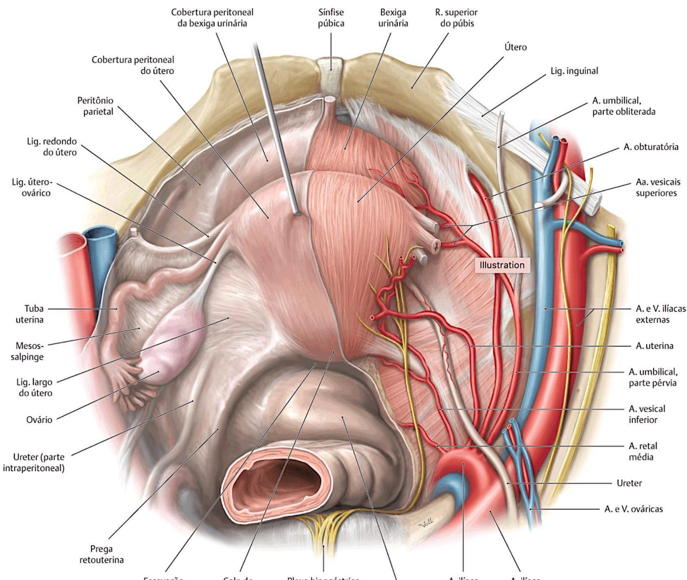
⚠️ Divergência
Frequência: na aula, 15%–25% das histerectomias teriam complicação séptica por lesão do ureter ("uma em cada quatro"). Na literatura, a lesão ureteral ocorre em cerca de 0,2%–1% das histerectomias (um pouco mais nas laparoscópicas e nas oncológicas radicais) — rara, mas é a lesão urológica iatrogênica mais clássica da cirurgia pélvica. Artéria uterina: na literatura ela é subperitoneal (extraperitoneal), na base do ligamento largo (paramétrio) — de fato não pertence ao retroperitônio abdominal, mas também não é intraperitoneal.
17 · Linfáticos, veias lombares e nervos
- 🎯 Linfonodos em volta da aorta e da cava — pré-aórticos, retroaórticos, lateroaórticos, pré-cavais e retrocavais — ficam no PERIRRENAL (na aula).
- 🎯 Eles drenam para os TRONCOS LOMBARES direito e esquerdo, que ficam no PARARRENAL POSTERIOR; os troncos se juntam na CISTERNA DO QUILO, que ao atravessar o diafragma passa a se chamar DUCTO TORÁCICO.
- 🎯 As VEIAS LOMBARES (direitas e esquerdas) também são do PARARRENAL POSTERIOR; pelas lombares ascendentes formam a ÁZIGO (direita) e a HEMIÁZIGO (esquerda) — parte da ANASTOMOSE CAVO-CAVA (a ázigo em si está no tórax).
- 🎯 Nervos do PLEXO LOMBAR — subcostal, ílio-hipogástrico, ilioinguinal, cutâneo femoral lateral (e genitofemoral, femoral) — no PARARRENAL POSTERIOR; seus ramos terminais contornam e chegam ao pararrenal anterior e à parede.
- Plexos autonômicos (celíaco, mesentéricos, aorticorrenais, intermesentérico, hipogástrico superior) colados à aorta/cava → PERIRRENAL.
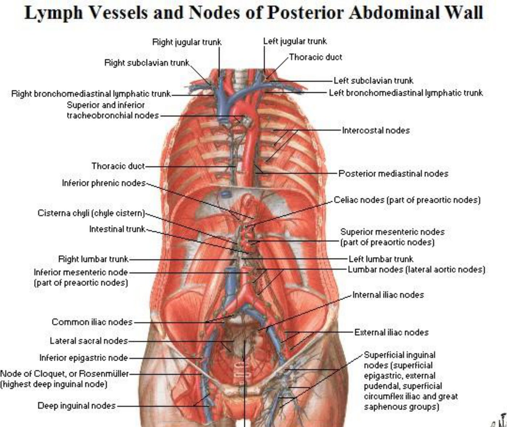
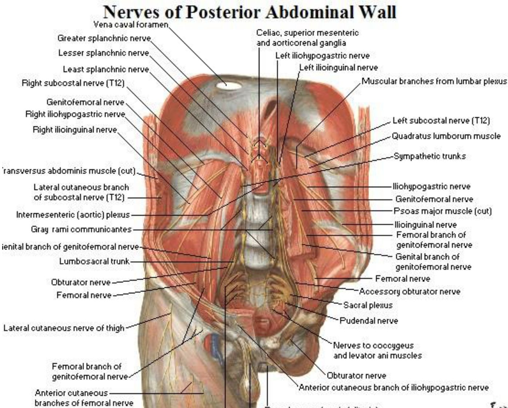
🎯 Como a prova foi descrita
Questões em itens encadeados a partir de um caso clínico clássico — ex.: após apendicectomia, o paciente acorda sem sensibilidade na face medial da coxa e na lateral do escroto: qual nervo foi lesado? Em que espaço do retroperitônio ele está (pararrenal posterior)? Quais os limites desse espaço? Sempre escreva os limites superior (diafragma) e inferior (vísceras pélvicas).
18 · Resumo rápido
- Retroperitônio: atrás da cavidade peritoneal, "tem tudo". Acesso lateral (Reynier, 1893): a gravidade empurra as vísceras para a frente.
- Embrião (6–10 sem): rotação → pâncreas/duodeno com face anterior peritonizada e posterior não; mesoderma → fáscia renal.
- Limites macro: diafragma · vísceras pélvicas (≈ cavidade pélvica) · fáscia transversal (atrás, lateralizada) · peritônio parietal posterior (frente).
- Expansões: esquerda = recesso lienal (ligamento gastroesplênico); direita = vestíbulo da retrocavidade (bolsa omental, forame de Winslow).
- Fáscia renal: lâmina anterior (Toldt, na aula) + posterior (Zuckerkandl), aderidas à aorta e à cava.
- Pararrenal anterior: peritônio parietal posterior × lâmina anterior · pâncreas, duodeno, flexuras (partes posteriores), tronco celíaco.
- Perirrenal: entre as lâminas · rim, suprarrenal, pelve, ureter, gonadais, cápsula adiposa, aorta/cava e linfonodos/plexos colados nelas.
- Pararrenal posterior: lâmina posterior × fáscia lateroconal · psoas, quadrado do lombo, plexo lombar, troncos linfáticos e veias lombares.
- Rim: T11/T12–L1/L3, direito mais baixo · atrás: 12ª costela (D), 11ª–12ª (E) · revestimentos: fibrosa → adiposa (entra no seio) → fáscia renal → corpo adiposo pararrenal.
- Artérias: renal D atrás da cava; renal E acima e atrás da veia renal E · anterior (4 segmentares) + posterior (1) = 5 segmentos · zona avascular · nefrectomia parcial clampeando o segmentar.
- Veias: 3 territórios (superior, médio, inferior) · renal E recebe suprarrenal E + gonadal E · quebra-nozes → varicocele · cava inferior esquerda persistente.
- Suprarrenal: superior (frênica inferior), média (aorta), inferior (renal) · veia D → cava; E → renal E.
- Ureter: abdominal / pélvica / intramural · constrições: JUP, vasos ilíacos, JUV (+ gonadais na clínica) · mulher: sob o ligamento largo, cruzado pela artéria uterina.
🗺️ Resumão Pré-Prova — Espaço Retroperitoneal, Rins e Ureteres
Revisão da véspera · Anatomia Topográfica · aula de 16/10 · só o que foi enfatizado
- Retroperitônio = atrás da cavidade peritoneal · peritônio é "restrito", retroperitônio "tem tudo" · acesso LATERAL (Reynier, 1893): a gravidade joga as vísceras para a frente.
- 6ª–10ª semana: o intestino sai e roda → pâncreas e duodeno ficam com a face anterior peritonizada e a posterior não · células do mesoderma → FÁSCIA RENAL (≠ cápsula fibrosa).
- Limites: SUPERIOR diafragma · INFERIOR vísceras pélvicas (≈ cavidade pélvica, Testut) · POSTERIOR fáscia transversal (lateralizada) · ANTERIOR peritônio parietal posterior.
- Expansão ESQUERDA = recesso lienal → ligamento gastroesplênico (estômago–hilo do baço; sem ele, peritônio comunica com retroperitônio) · DIREITA = vestíbulo da retrocavidade (bolsa omental, forame de Winslow, da 1ª porção do duodeno ao lobo caudado).
- Fáscia renal: lâmina ANTERIOR = Toldt (na aula) · POSTERIOR = Zuckerkandl · aderidas à aorta e cava → origem dos ramos é retroperitoneal.
- PARARRENAL ANTERIOR: frente = peritônio parietal POSTERIOR · trás = lâmina anterior · pâncreas e duodeno (partes posteriores), flexuras cólicas, tronco celíaco.
- PERIRRENAL: entre as lâminas · rim, suprarrenal, vasos renais, pelve, ureter, gonadais, cápsula adiposa, aorta/cava + linfonodos e plexos colados nelas.
- PARARRENAL POSTERIOR: frente = lâmina posterior · trás e lado = FÁSCIA LATEROCONAL (fala: fáscia renal + transversal; slide: lâminas unidas lateralmente, seguindo por dentro da transversal) · psoas, quadrado do lombo, plexo lombar, troncos linfáticos e veias lombares.
- Todos os espaços: superior diafragma · inferior vísceras pélvicas — escreva sempre!
- AMS: origem perirrenal → pararrenal anterior → peritônio → jejunais/ileais/cólicas · aneurisma = necrose intestinal · quebra-nozes: AMS comprime a veia renal E (retroperitônio).
- T11/T12 → L1/L3 · direito MAIS BAIXO · à frente do psoas maior · pendular (ptose renal).
- Atrás: D = 12ª costela · E = 11ª e 12ª · psoas maior, quadrado do lombo, transverso.
- À frente: D = fígado, flexura cólica D, DUODENO (junto ao hilo), delgado · E = estômago, pâncreas, baço, flexura cólica E, jejuno.
- Revestimentos: cápsula FIBROSA (elástica) → cápsula ADIPOSA (entra pelo hilo até o SEIO RENAL) → FÁSCIA RENAL → CORPO ADIPOSO PARARRENAL.
- Na aula: fibrosa enrijecida → HAS do idoso · gordura do hilo marrom → NO (vasodilatação) — ver divergências no Conteúdo.
- HILO (margem medial) → PEDÍCULO = vasos + nervos + pelve · espaço entre eles = SEIO RENAL.
- A. renal D passa ATRÁS da cava inferior · A. renal E SUPERIOR e POSTERIOR à veia renal E · hilo em L1–L2.
- No hilo: A. renal ANTERIOR → segmentos superior, ântero-superior, ântero-inferior, inferior · A. renal POSTERIOR → segmento posterior (5 territórios).
- Nefrectomia parcial: clampeia só o segmentar do tumor · ZONA AVASCULAR entre anterior e posterior (muito capilar, pouco vaso grande) → abrir o parênquima.
- Artéria = sai do coração → tecido · veia = tecido → coração.
- Veias: 3 territórios — superior, médio, inferior · renal D → cava direto · renal E recebe SUPRARRENAL E + GONADAL E, comunica com hemiázigo, passa entre AMS e aorta.
- Quebra-nozes → gonadal E (contra a gravidade) não drena → VARICOCELE · cava inferior E persistente (0,2–3% no slide) → risco cirúrgico.
- Córtex → corticosteroides · medula → catecolaminas · artérias: SUPERIOR ← frênica inferior · MÉDIA ← aorta · INFERIOR ← renal · veias: D → cava · E → renal E.
- Ureter: fibromuscular, músculo "não constante" → peristaltismo · sobre o psoas → cruzado pelos gonadais → cruza os ilíacos (até aí retroperitoneal).
- Partes: ABDOMINAL · PÉLVICA · INTRAMURAL · constrições: JUP · vasos ilíacos · JUV (+ 4ª clínica: gonadais) · Giordano na litíase.
- Homem: ducto deferente cruza superomedialmente · Mulher: sob o ligamento largo, CRUZADO superior e anteriormente pela A. UTERINA → risco na histerectomia (via vaginal = mais segura) · a. uterina é da cavidade pélvica, não do retroperitônio.
- Linfonodos pré/retro/lateroaórticos e cavais = PERIRRENAL → TRONCOS LOMBARES D e E = PARARRENAL POSTERIOR → cisterna do quilo → atravessa o diafragma = ducto torácico.
- Veias lombares = pararrenal posterior → ázigo/hemiázigo → anastomose cavo-cava.
- Plexo lombar (subcostal, ílio-hipogástrico, ilioinguinal, cutâneo femoral lateral) = PARARRENAL POSTERIOR · plexos autonômicos colados à aorta = perirrenal.
| Par | A diferença-chave |
|---|---|
| Limite anterior do pararrenal ANTERIOR | peritônio parietal POSTERIOR (não "anterior") |
| Fáscia renal × cápsula fibrosa | secreção do mesoderma, divide os espaços × colada ao parênquima |
| Lâmina anterior × posterior | Toldt (na aula) × Zuckerkandl |
| Expansão esquerda × direita | recesso lienal (gastroesplênico) × vestíbulo da retrocavidade (Winslow) |
| Cápsula adiposa × corpo adiposo pararrenal | dentro da fáscia (perirrenal, entra no seio) × fora da fáscia |
| Linfonodos aórticos × troncos lombares | perirrenal × pararrenal posterior |
| A. renal D × E | atrás da cava × acima e atrás da veia renal E |
| Territórios arteriais × venosos | 5 (sup., ântero-sup., ântero-inf., inf., post.) × 3 (sup., médio, inf.) |
| Veia renal D × E | curta, direto na cava × recebe suprarrenal E + gonadal E, sob a AMS |
| Veia suprarrenal D × E | cava inferior × veia renal esquerda |
| Constrições anatômicas × clínicas | 3 (JUP, ilíacos, JUV) × 4 (+ gonadais) |
| Ureter no homem × na mulher | cruzado pelo ducto deferente × cruzado pela artéria uterina |
Banco de Questões — Espaço Retroperitoneal, Rins e Ureteres
Anatomia Topográfica · aula de 16/10 · estilo ENADE/residência.